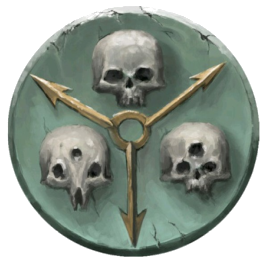

Nathaniel Garro
| Nathaniel Garro | |
|---|---|
| Agentia Primus of the Knights-Errant | |
 Garro in the grey of the Knights-Errant, leaning on the sword Libertas Artwork © Games Workshop | |
| Agentia Primus of the Knights-Errant | |
| Tenure | c. 006–014.M31 |
| Appointed by | Malcador the Sigillite |
| Battle-Captain, 7th Great Company, Death Guard | |
| Tenure | Great Crusade (date unrecorded) – 005.M31 |
| Born | M30 (year unrecorded), Terra |
| Died | 014.M31, killed by Mortarion at the Marmax Bastion, Siege of Terra |
| Allegiance | Emperor of Mankind |
| Legion |  XIV, the Death Guard (until 005.M31) |
| Relatives |
|
| Companions |
|
| Wargear | The power sword Libertas; Mark VI armour; the Aquila Imperator |
| Known for | The flight of the Eisenstein; the Knights-Errant; called the first martyr of the Imperial Cult |
Nathaniel Garro was a battle-captain of the Death Guard Legion who stayed loyal to the Emperor when his primarch Mortarion followed Horus. A Terran-born veteran of the Legion's oldest generation, he commanded its 7th Great Company in the closing years of the Great Crusade. In 005.M31 he seized the frigate Eisenstein at Isstvan III, and with seventy loyal Death Guard, the Seventy, carried the first news of the Horus Heresy to Terra.[1][2]
Malcador the Sigillite then made him Agentia Primus of the Knights-Errant, a small order of warriors of many Legions, loyal and traitor alike, who carried out the Regent's secret work. Garro stripped the marks of the Death Guard from his armour, called himself a "Legion of one", and recruited among others the Ultramarines Librarian Tylos Rubio, the World Eater Macer Varren and the former Sons of Horus captain Garviel Loken. From the Knights-Errant, Malcador chose the first warriors of the Grey Knights.[3]
Garro was not a psyker and was not among those chosen. He fought the Siege of Terra at Loken's side and died in 014.M31 at the Marmax Bastion, struck down by Mortarion while he held the primarch back to buy time for Euphrati Keeler and the surviving defenders to escape. The Iterator and future Inquisitor Kyril Sindermann later called him the first true martyr of the Imperial Cult.[4]
Later tradition has embroidered his fate. Some tales keep him alive in prison with the Seventy, or serving the Apothecarion in search of a cure for the plague of Nurgle, or commanding a task force in the old colours of the Death Guard in the 41st millennium. The Logos Historica Verita holds that he died on the soil of Terra. His name was honoured among the first Inquisitors, and the sign he wore on his shoulder, the Sigillite's mark, is the rosette of the Inquisition today.[2][5]
Early life and the Dusk Raiders
[edit]Garro was born on Terra in the 30th millennium, in the small techno-barbarian state of Albia on the continent of Europa, and joined the Legion that was to become the Death Guard before its primarch had been found. In those years the Legion was known as the Dusk Raiders, for its habit of attacking an enemy at nightfall. It wore dull white armour with the right arm and shoulder painted crimson, the Emperor's red right hand, and many enemies laid down their weapons when the sun fell rather than meet it. The Emperor of Mankind himself was its only commander. When he found Mortarion on Barbarus, the Legion took on the colours and the name of its primarch.[6]
At Mortarion's coronation most of the Legion were Terrans like Garro, but their number dwindled as new recruits came only from Barbarus, until by the last years of the Great Crusade a bare handful remained. Garro feared that when they were gone the Legion would lose the character that they had given it. He kept the old Terran customs, and his rigid and high-handed leadership caused a rift with the Barbarus-born captains, who called him "Straight-Arrow Garro". He also refused to join the warrior lodges, which had spread from the Luna Wolves to most of the Legions, because he held that the Imperial Truth could not be served by a society built on secrecy.[6][7]
The Great Crusade
[edit]Garro fought through many campaigns of compliance, often beside other Legions. In the Krypt Campaign against the Orks he met Garviel Loken of the Luna Wolves. In the Preaixor Campaign he formed a closer bond with Saul Tarvitz of the Emperor's Children, who showed him that the reputation of Fulgrim's sons for vanity did not hold for all. They carved a small eagle into the ceramite of their armour, a sign of the debt they owed one another, and when they clasped wrists their vambraces made the shape of the Aquila.[1]
Near the end of the Crusade Garro won high praise in the Jorgall Persecution, where he fought psychic xenos beside a cadre of the Sisters of Silence. Mortarion singled him out to share a cup of poison, the ritual by which the primarch honoured a chosen warrior after a battle, which the Death Guard could survive after their long training in toxins. Mortarion talked to him privately, trying to learn where his loyalty truly lay, for the primarch hoped to win him to the Warmaster's cause. He made Garro his equerry and took him to a conclave aboard the Vengeful Spirit to plan the Isstvan campaign.[1][6]
The Horus Heresy
[edit]Isstvan III
[edit]On Isstvan Extremis, the outermost planet of the system, Garro's 7th Great Company fought beside the Emperor's Children against rebel forces. A Slaaneshi psyker crushed his torso and arm and took his right leg, and he was saved by the Emperor's Children Apothecary Fabius. His new leg was a bionic limb, which made him limp until it learned the movements of his body. Judged unfit for the final assault, he was assigned with the 2nd Company's commander Grulgor to the frigate Eisenstein in high orbit, on orders from the First Captain Calas Typhon, who meant him to remain aboard while the Legion's loyalists were destroyed on the surface.[1]
Garro grew suspicious. His housecarl Kaleb Arin and the company Apothecary Meric Voyen found Grulgor's men fitting the glide bombs of the frigate with Life-Eater virus, brought from the Death Guard flagship Endurance. Meanwhile the Eisenstein was ordered to destroy a Thunderhawk fleeing the Emperor's Children flagship, and the pilot who called for help was Tarvitz. Garro learned from him that Horus had betrayed the Emperor and that every loyal Marine on Isstvan III was to die. He altered the firing solution so that the frigate destroyed only an escorting Raven, and let Tarvitz escape.[1]
He then faced Grulgor with only Voyen, Arin and a battle-brother, Sendek. Grulgor announced that the Emperor had abandoned the Legions, and that Horus and Mortarion alone commanded the Death Guard. In the fight a ricochet broke a virus sphere open, and Arin, though mortally wounded, closed a blast door and saved the loyalists at the cost of his life. Grulgor and his warriors died in the gas.[1]
Flight of the Eisenstein
[edit]Garro told his seventy remaining Death Guard the whole truth and had them swear an Oath of Moment upon his power sword Libertas to carry the warning to Terra. He considered broadcasting it to the whole fleet, which would have saved the loyalists among the Sons of Horus and the World Eaters, but he judged that the signal would doom the ship before the message could arrive, and held his tongue. A Thunderhawk of the Sons of Horus then landed under Iacton Qruze, a former captain of that Legion, carrying three refugees from the slaughter of civilians on the flagship: the Iterator Kyril Sindermann, the remembrancer Mersadie Oliton, and the former remembrancer Euphrati Keeler, whom the followers of the Lectitio Divinitatus already called a Living Saint. Garro granted them sanctuary, and talk with Keeler strengthened his growing belief in the Emperor's divinity.[1]
The ship slipped from the rear of the blockading fleet by reporting a failed generator, but Typhon on the Terminus Est gave chase and wrecked the frigate's astropaths and Navigator with his broadsides. Garro ordered a blind jump. In the Warp, Nurgle seized the weakened ship and raised Grulgor and his dead as the first Plague Marines, and Grulgor infected Garro's battle-brother Solun Decius with the Rot before Garro forced an emergency return to real space. Stranded, he overloaded the warp drive and jettisoned it, hoping that the blast would call a rescuer. It did. The detonation drew the fleet of Rogal Dorn, returning to Terra as its Praetorian, who took the survivors aboard the Phalanx.[1]
Dorn at first refused to credit the news that his brothers had turned traitor, but relented in the face of testimony from many sources, including Qruze, a Marine of Horus's own Legion. The Phalanx brought them to the Sol System and to the Emperor.[1]
Luna
[edit]Garro, the Seventy, Keeler and Qruze were held in the Somnus Citadel on Luna, a fortress of the Sisters of Silence, while the Emperor decided whether they were witnesses or pawns of the Warp. Decius, tormented by the Rot, gave in to Nurgle and became the vessel of the Lord of Flies, a Greater Daemon of Nurgle, killing the two Marines who kept his death vigil. Garro hunted the daemon through the citadel and onto the airless surface of the moon, and banished it to the Warp. Afterwards Malcador the Sigillite came to him, Qruze and the Silent Sister Amendera Kendel with a charge from the Emperor: to found an order of hunters, outside the machinery of the Imperial bureaucracy, who would seek the witch, the traitor, the mutant and the xenos.[2][3]
Agentia Primus of the Knights-Errant
[edit]Recruitment
[edit]Garro came to Terra c. 006.M31 as the Sigillite's Agentia Primus. All the marks of the Death Guard were removed from his armour, and in their place he bore on one shoulder Malcador's own sign, a letter I crossed by three bars, which would later become the rosette of the Inquisition. His first task was to recruit seven others. At the Battle of Calth in 007.M31 he found the Ultramarines Librarian Tylos Rubio in the 21st Company, a psyker who had given up his panoply under the Edict of Nikaea and now broke it to save his brothers in a cave beneath Numinus. His battle-brothers turned their backs on him for it. Garro had him swear an Oath of Moment upon Libertas to serve the Regent of Terra and set aside all other claims on his honour.[3][7]
Macer Varren, a World Eaters captain who had refused to follow Angron and been hunted by his Legion for it, reached the Sol System aboard the Daggerline and joined the Knights-Errant when the vessel was destroyed. Garro infiltrated the Phalanx to recruit the Imperial Fists Codicier Yored Massak, who refused, and Dorn warned him to be wary of Malcador's orders. Garro then intercepted the Apothecary Voyen, who was taking the remains of Decius to Io for study, and sent them into the sun. With the Luna Wolves psyker Severian he worked through the Sigillite's list. At a later date that the record gives only as 017.008.M31, which is probably a corrupted figure, he reached the Pale Stars aboard the Eusebian Herald with Rubio and Callion Zaven, where an Alpha Legion ambush interrupted a conclave with a Blood Angel, a White Scar and a Blackshield called the Nemean Reaver, who joined them.[3]
The last recruit was Loken. He had survived the virus-bombing of Isstvan III and lived among its ruins for years, believing himself the last loyalist in the galaxy and calling himself Cerberus. Garro and his companions found him among plague zombies, defeated the undead with his help, and then fought him, until Garro reached through his amnesia and called him by name.[3]
Keeler, Titan and the Grey Knights
[edit]Garro also searched for Keeler, who had been released from the Somnus Citadel when no psychic power could be found in her and who preached the divinity of the Emperor on Terra. On the Riga orbital plate he met the scribe Katanoh Tallery, who had learned that ships and stores were being diverted in secret to Titan, and who feared a traitor plot. The pair traced the shipments to a fortress rising on the moon and found Malcador already there. The project was the Emperor's own, the fortress of the future Grey Knights. Malcador ordered Tallery killed to protect it. Garro refused, and Malcador relented and made her the project's curator instead.[3]
As the traitor fleets entered the Sol System in 013.M31 Malcador chose eight Knights-Errant to take through a Webway portal in the Imperial Palace to the new fortress on Titan, after Loken refused the honour so that he might take revenge on Horus. Garro, who had no psychic power, was not among them. Malcador released him and the others from his service, so that they could fight the Siege of Terra on their own terms.[3]

The Siege of Terra and death
[edit]Before the Siege Garro and his Knights-Errant fought outbreaks of daemonic infestation across the Throneworld, at the Walking City and at the White Mountain, where Malcador held a group of tortured Silent Sisters. At both places they met the Lord of Flies again, and cast it down once more, but at the White Mountain the possessing power tried to take Varren, and his comrades killed him. In 014.M31, when the Siege began, Garro and Loken led kill-teams with the Death Guard veteran Helig Gallor against the Sons of Horus who were trying to pass the Saturnine section of the Ultimate Wall, a feigned weakness that Dorn had made into a trap. There they killed the Justaerin captain Falkus Kibre, who was possessed by a daemon, and nearly caught Abaddon, who teleported away from under the body of the World Eater Endryd Har.[4]
Later Garro and Gallor met Keeler at the Marmax Bastion just as the Death Guard attacked it, led by Mortarion and Typhus. Garro went out to hold his gene-father so that Keeler and the survivors could flee. Mortarion offered him one of the poison cups of the old rite and a place in the Legion again, and Garro refused it. They fought, and Mortarion beat him down. As he lay dying, a golden light, which Garro's comrades attributed to Keeler's faith, raised him up, and for a time he matched the primarch. Then Mortarion's scythe Silence broke Libertas and pierced his heart. Garro pulled himself along the blade and drove the broken half of his sword into Mortarion's throat, a wound that would not close, and died.[4]
Appearance and wargear
[edit]Garro had a patrician look, from the warrior dynasties of old Terra. He was pale, but without the pallor of the Barbarus-born, with a hairless head patterned with scars and eyes that looked older than his face. As a Death Guard he wore Mark IV armour, with a ceremonial brass cuirass sculpted with the single eagle of his rank, a bird differing from the double-headed Aquila of the Imperium. As Agentia Primus he wore the more advanced Mark VI Corvus armour, a plain stone grey from helm to boot, bearing only the hidden letter of the Sigillite on a shoulder plate. He carried a master-crafted Paragon bolter, the power sword Libertas, and a device called a Falsehood that bent light around him and made him hard to see or target.[8][2]
Legacy
[edit]Sindermann called Garro the first true martyr of the Imperial Cult, because he died for the faith that Keeler preached and kept her alive for it. The Knights-Errant did not outlast the Heresy as an order, but several of its members led the Grey Knights, the Chamber Militant of the Ordo Malleus. Of the later stories of his survival, the claim that he became the Lord of Flies is certainly false, since that daemon was Solun Decius.[2][5]
Timeline
[edit]| Date | Event |
|---|---|
| M30 (year unrecorded) | Born on Terra; joins the XIV Legion, then the Dusk Raiders |
| Late Great Crusade | Fights the Jorgall Persecution; shares Mortarion's cup |
| 005.M31 | Wounded on Isstvan Extremis; takes the Eisenstein at Isstvan III |
| 005.M31 | Flight of the Eisenstein; rescue by Dorn; the Somnus Citadel |
| c. 006.M31 | Named Agentia Primus of the Knights-Errant |
| 007.M31 | Recruits Tylos Rubio at Calth |
| After 007.M31 (date uncertain) | Recruits at the Pale Stars; Loken found on Isstvan III |
| 013.M31 | The Grey Knights chosen; Garro released from Malcador's service |
| 014.M31 | Kill-teams at the Saturnine wall; killed by Mortarion at the Marmax Bastion |
See also
[edit]Notes
[edit]References
[edit]- ^ a b c d e f g h i Swallow, James. Flight of the Eisenstein (novel). Black Library.
- ^ a b c d e Swallow, James. Garro (novel). Black Library. chs. 1-4, 6-11, 14, 16, 20-21, Epilogue. Swallow, James. The Buried Dagger (novel). Black Library. chs. 6-7.
- ^ a b c d e f g Swallow, James. Garro: Oath of Moment (audio drama), Garro: Legion of One (audio drama) and Garro (novel). Black Library. Swallow, James. Patience (short story). Black Library.
- ^ a b c Swallow, James. Garro: Legion of One (audio drama) and Garro: Sword of Truth (audio drama). Black Library.
- ^ a b McNeill, Graham. Vengeful Spirit (novel). Black Library. Bligh, Alan. The Horus Heresy Book Six: Retribution (Forge World series). Forge World. pp. 208-209.
- ^ a b c Index Astartes III, "The Lost and the Damned: The Death Guard Space Marine Legion". Games Workshop. Swallow, James. Garro: Shield of Lies (audio drama) and Garro: Ashes of Fealty (audio drama). Black Library.
- ^ a b Swallow, James. Garro: Oath of Moment (audio drama). Black Library.
- ^ "Nathaniel Garro, Hand of the Sigillite" and Horus Heresy datasheet. Forge World. Swallow, James. Flight of the Eisenstein (novel). Black Library.